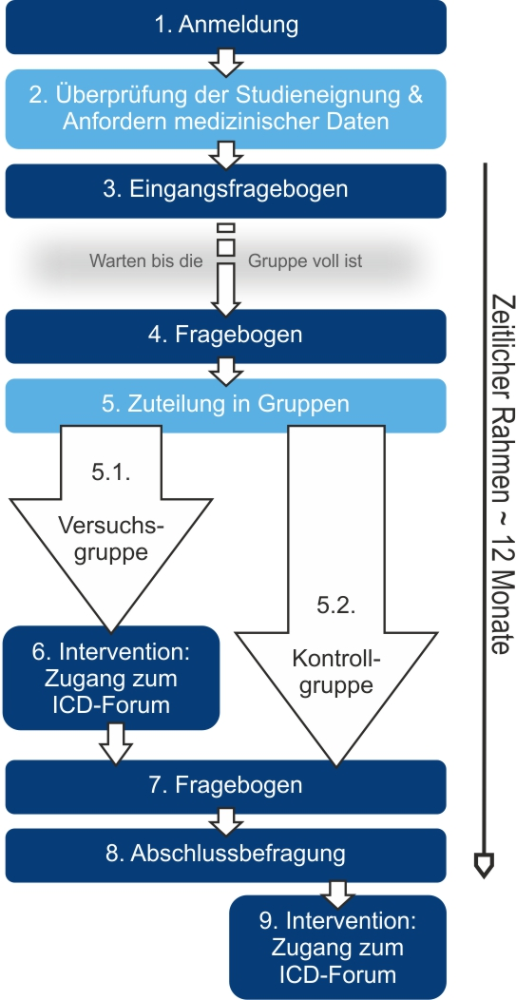

Ablauf der Studie

Wenn Sie sich zur Teilnahme an dieser Studie entscheiden, schicken Sie die ausgefüllten Anmelde-Unterlagen per Post, Fax oder Email an die Studienleitung (1). Die Studienleitung überprüft dann Ihre Studieneignung (2) anhand Ihrer Anmeldeunterlagen und den medizinischen Daten, die wir von Ihrem behandelnden Arzt angefordert haben. Erfüllen Sie alle für die Teilnahme notwendigen Kriterien, bekommen Sie von uns eine schriftliche Bestätigung, sowie den Eingangsfragebogen per Post zugesandt (3), welchen Sie dann ausgefüllt an uns zurückschicken.
Danach kann es zu unterschiedlich langen Wartezeiten kommen - je nachdem wie lange es dauert bis sich genügend Teilnehmer für eine Gruppe angemeldet haben. Kurz vor dem Start erfahren Sie dann, welcher der zwei Studiengruppen Sie zugeteilt wurden (5) und wie es weiter geht. Zeitgleich schicken wir Ihnen wieder Fragebögen zu (4).
Im Anschluss erhält die Versuchsgruppe (5.1) den Zugang zur Intervention (6). Falls Sie zunächst in die Kontrollgruppe eingeteilt werden, bieten wir Ihnen die Möglichkeit, das Angebot im ICD-Forum nach Ablauf der Datenerhebung kostenfrei zu nutzen (9).
Am Ende des Programms (7), sowie ein Jahr nach Beginn Ihrer Studienteilnahme (8), erhalten Sie - unabhängig davon in welcher Gruppe Sie sind - wieder Fragebögen per Post. Diese weiteren Untersuchungen bleiben für die Teilnehmer beider Gruppen gleich.
Details zu den Untersuchungen
Fragebögen:
Standardisierte Fragebögen geben uns Auskunft über die Ausprägung unterschiedlicher seelischer Belastungen (z.B. Ängste, Depression) und helfen uns, Ihre Situation mit anderen Patientengruppen, über die bereits wissenschaftliche Erkenntnisse vorliegen, zu vergleichen. Das Bearbeiten der gesamten Fragebogen-Mappe dauert ca. 20 bis 30 Minuten.
Medizinische Daten:
Zusätzlich möchten wir medizinische Daten aus Ihrer Patientenakte nutzen. Hierfür entsteht für Sie kein weiterer Aufwand. Durch Ihre Schweigepflichtsentbindung haben wir die Möglichkeit, für uns wichtige Daten aus Ihrer Patientenakte von Ihrem behandelnden Arzt und/oder Ihrer Klinik anzufordern. Sie bestimmen dabei, wer uns welche Daten mitteilen darf.
Welche Daten wir im Detail anfordern, alle weiteren Details zur Schweigepflichtsentbindung, sowie Information zu den von uns getroffenen Sicherheitsvorkehrungen im Umgang mit Ihren Daten können Sie hier nachlesen. Diese Informationen finden Sie auch noch einmal detailliert in der Patienteninformation, die Sie gemeinsam mit den Anmelde-Unterlagen herunterladen können.